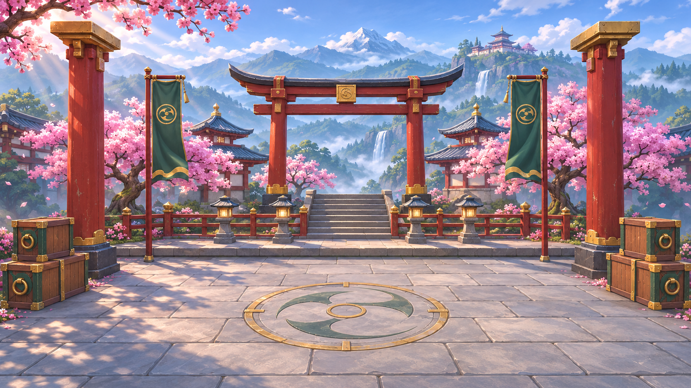
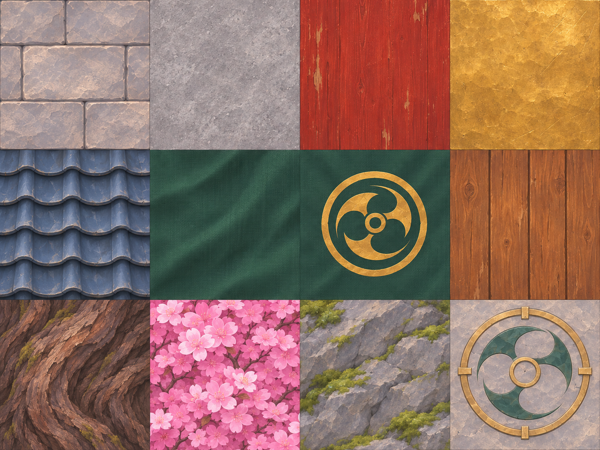
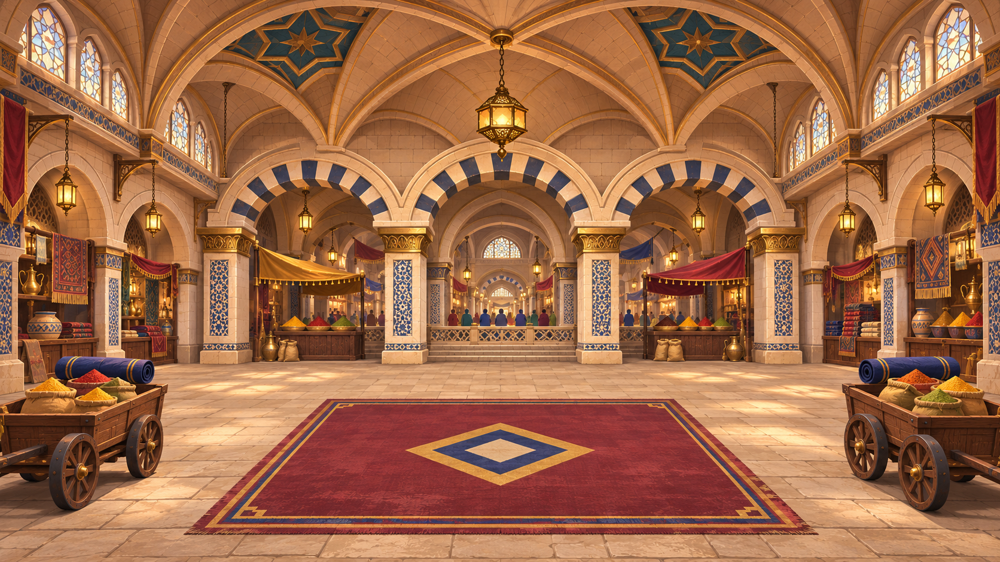
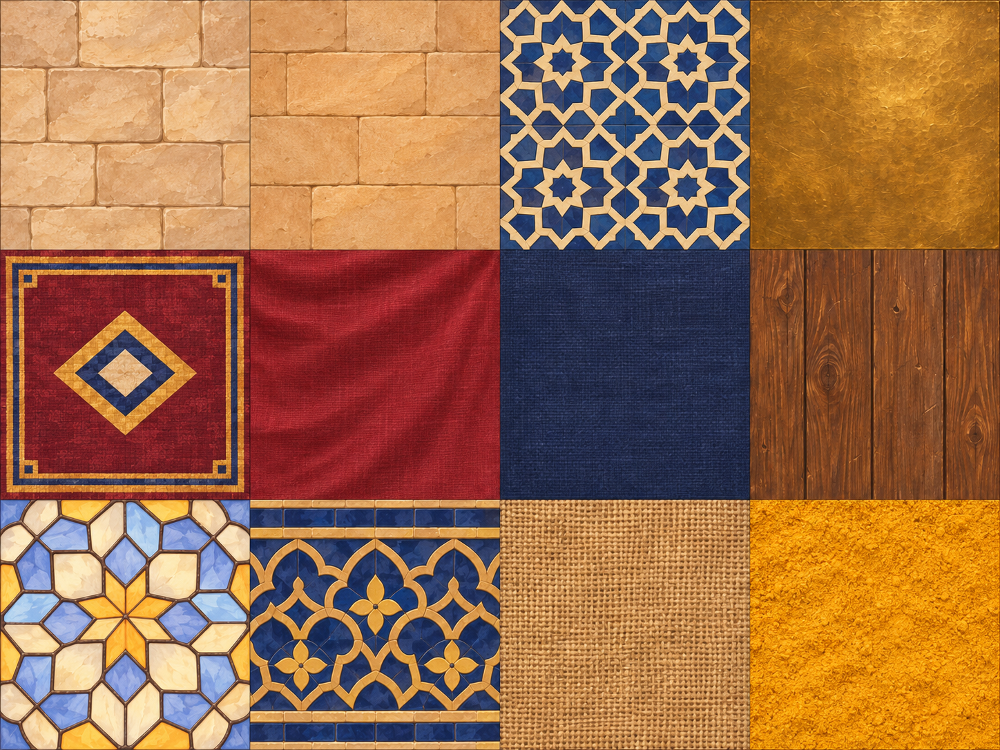
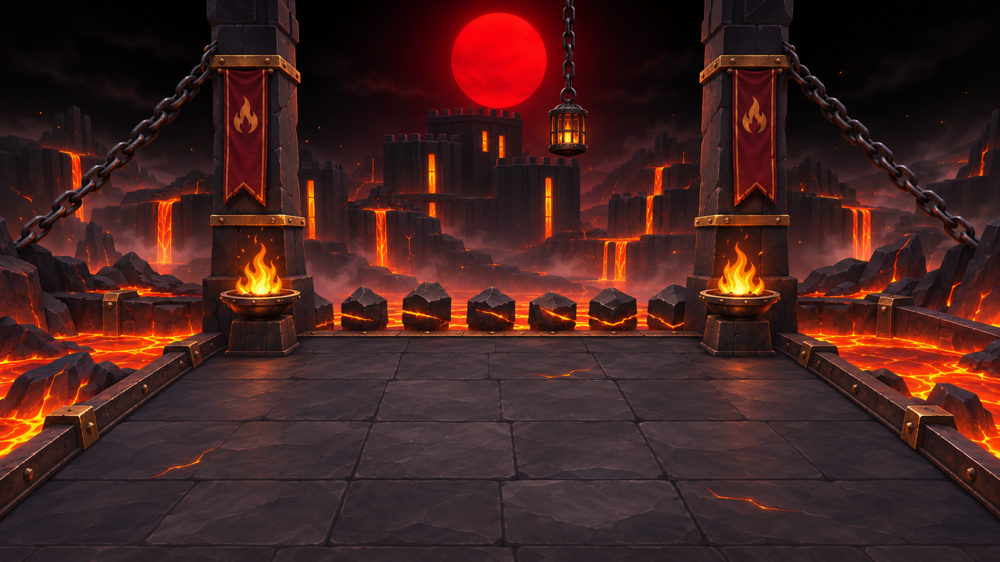
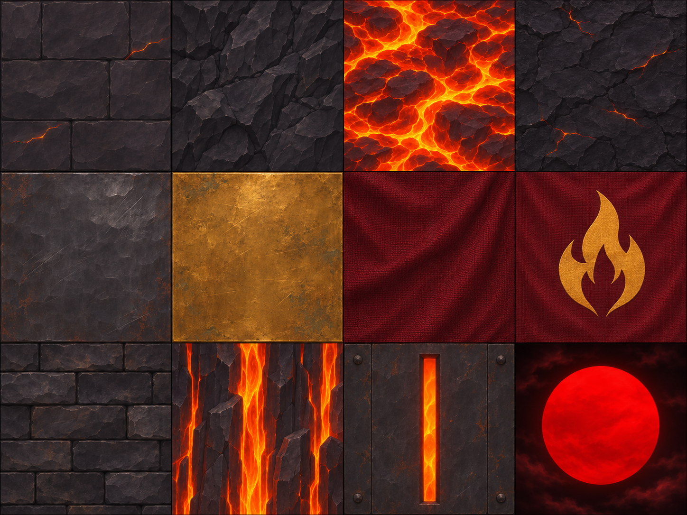

Atlas das três arenas
Santuário, bazaar fechado e forja do sol vermelho. 36 células de materiais, seguindo as concepts.
Baixar os três atlas e mapas UV
Santuário


Baixar PNG · Regiões e UVs
| Linha | 1 | 2 | 3 | 4 |
|---|
| 1 | Piso de calcário | Pedra estrutural | Madeira vermelha | Latão envelhecido |
|---|
| 2 | Telhas azul-ardósia | Tecido jade | Emblema do vento | Madeira das caixas |
|---|
| 3 | Casca de cerejeira | Flores de cerejeira | Pedra com musgo | Medalhão do piso |
|---|
Bazaar fechado


Baixar PNG · Regiões e UVs
| Linha | 1 | 2 | 3 | 4 |
|---|
| 1 | Piso de calcário | Parede de arenito | Azulejo cobalto e marfim | Latão envelhecido |
|---|
| 2 | Tapete central | Tecido carmesim | Tecido azul-marinho | Madeira dos carrinhos |
|---|
| 3 | Vitral geométrico | Friso azul e dourado | Juta dos sacos | Especiaria amarela |
|---|
Forja do sol vermelho


Baixar PNG · Regiões e UVs
| Linha | 1 | 2 | 3 | 4 |
|---|
| 1 | Piso de basalto | Basalto natural | Lava | Crosta vulcânica |
|---|
| 2 | Ferro escuro | Latão envelhecido | Tecido vinho | Emblema do fogo |
|---|
| 3 | Tijolos escuros | Lava vertical | Abertura da forja | Céu preto e sol vermelho |
|---|
Albedo pintado para modelagem e UVs. Emendas, escala e mipmaps precisam de ajuste no modelo; não inclui mapas PBR separados.